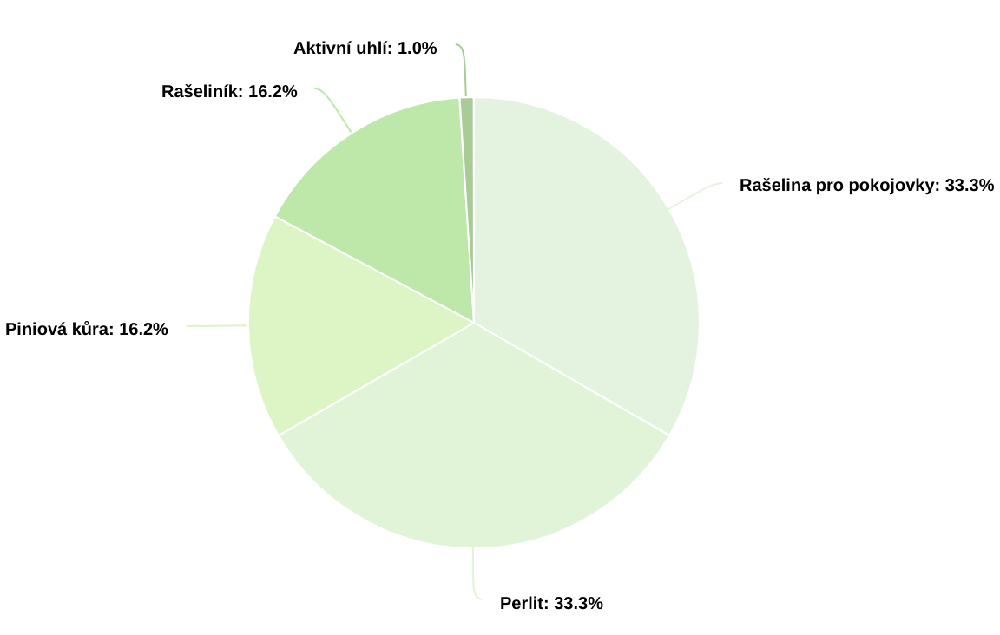

Monsterám dopřejte dostatek rozptýleného světla bez přímých slunečních paprsků. Většinou snesou i stinnější stanoviště, ale třeba monstera deliciosa nebude mít tak pěkně vykrojené listy.Ideální je pokojová teplota okolo 20 °C.
Zálivku dodržujte pravidelnou a rovnoměrnou, před dalším zaléváním nechejte vrchní vrstvu substrátu proschnout. Je lepší je nechat trochu přeschnout, než je přelít a rozhodně by nikdy neměly stát ve vodě. Monstery přímo milují vysokou vzdušnou vlhkost, proto je pravidelně roste.
Hnojíme během vegetačního období (od jara do podzimu) jednou za 14 dnů. Dá se použít hnojivo pro pokojové rostliny.
Množení monster provádíme pomocí řízku. Uřízneme výhonek se vzdušným kořenem a dá se na 4-6 týdnů zakořenit do vody.
Pokud se rozhodnete vybrat list monstery bez vzdušného kořene, je velmi pravděpodobné, že se výhonek nerozkoření. Takový výhonek poté nelze zasadit.
Po 4-6 týdnech by kořeny výhonku monstery měly dorůst délky cca 5 cm a pokojovku je možné zasadit.
K rychlejší tvorbě kořenů pomůže lignohumát
Cílem je vytvořit lehkou směs, která dobře odvádí vodu a zajišťuje dostatečné provzdušnění kořenů. za mě je nejlepší použití těchto materiálů:
Rašelinový substrát pro pokojové rostliny
Piniová kůra (frakce 15-25mm ideální) nebo Kokosové kousky tu
Perlit
Rašeliník
Aktivní uhlí
Worm hummus - biologické hnojivo z exkrementů kalifornských žížal
Jaké poměry?
Smíchejte jeden díl substrátu pro pokojovky, jeden díl tvořený rašeliníkem a piniovou kůrou a jeden díl perlitu. Já doporučuji také přidat worm hummus v poměru 1:10 jako účinné doplnění živin. Aktivní uhlí je složka pro zlepšení provzdušnění a přidejte ho pouze malé množství.
